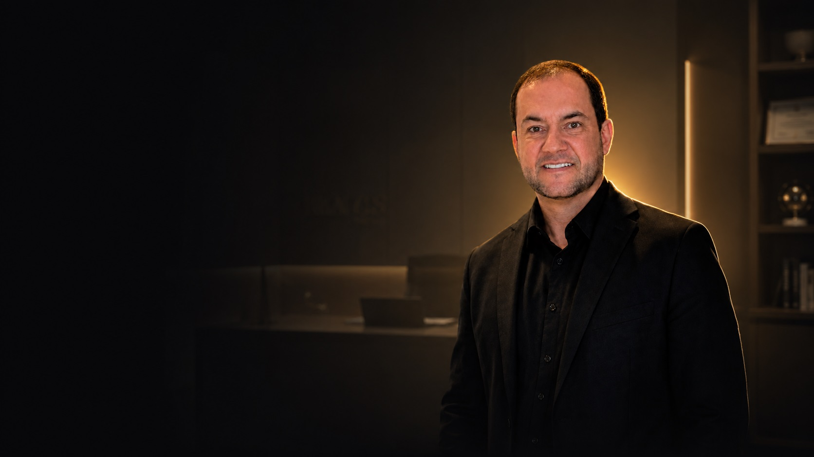
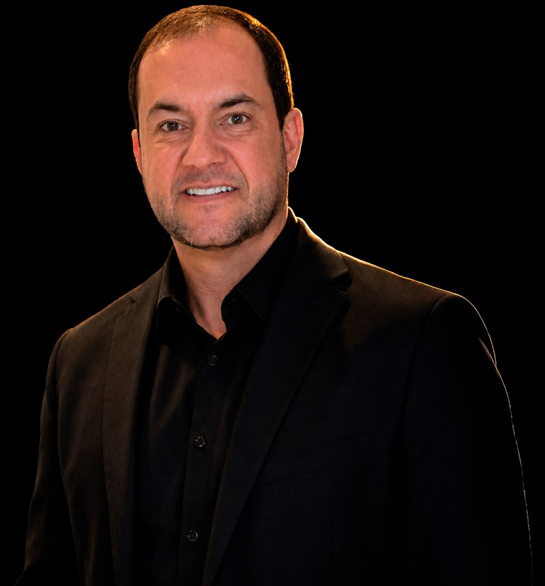
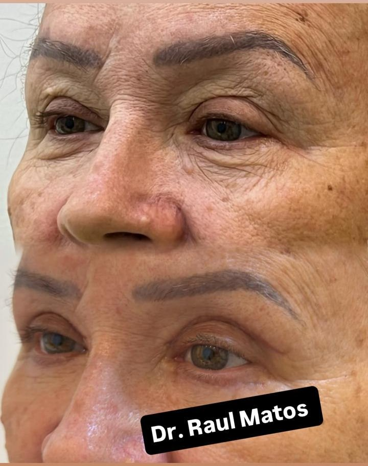
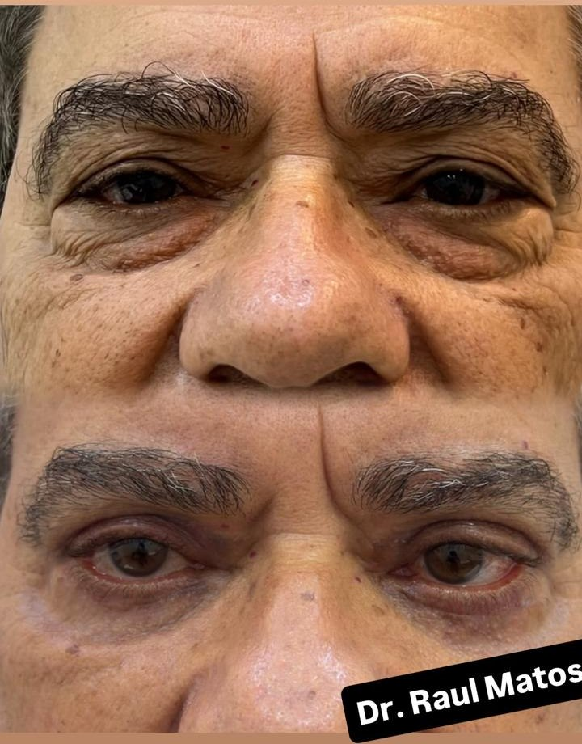
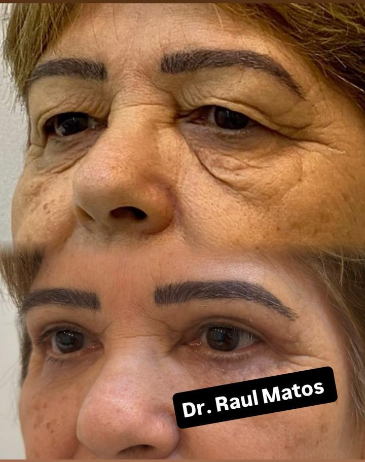
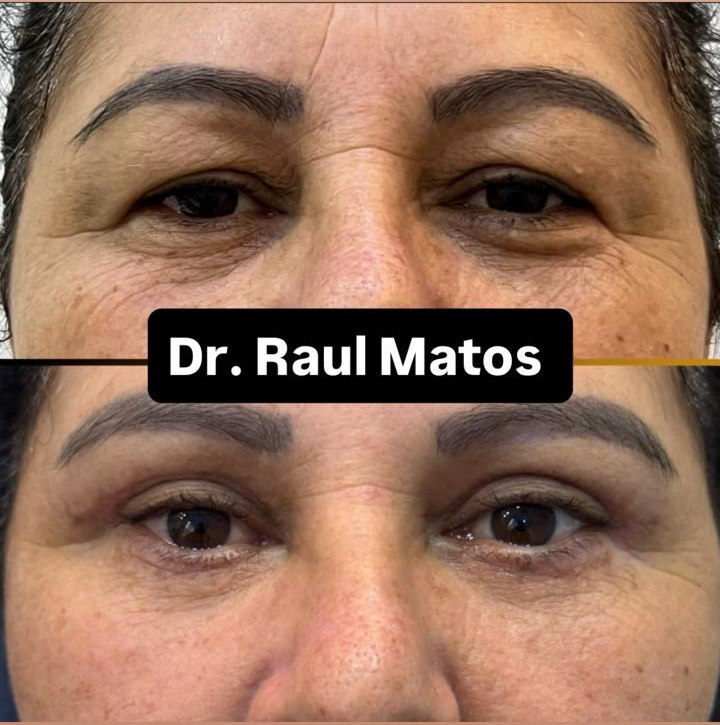
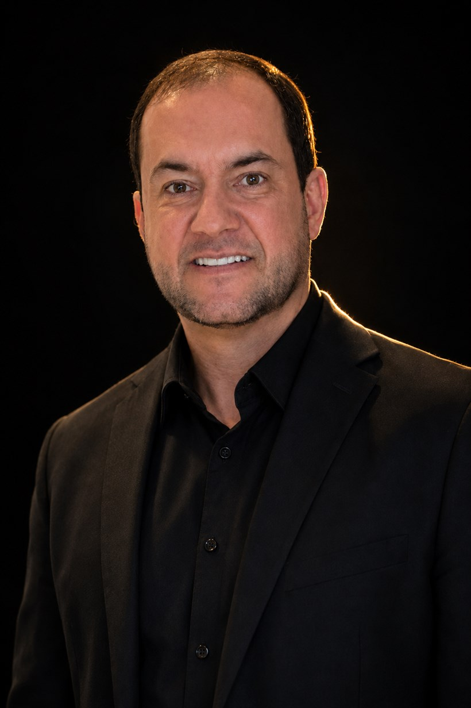
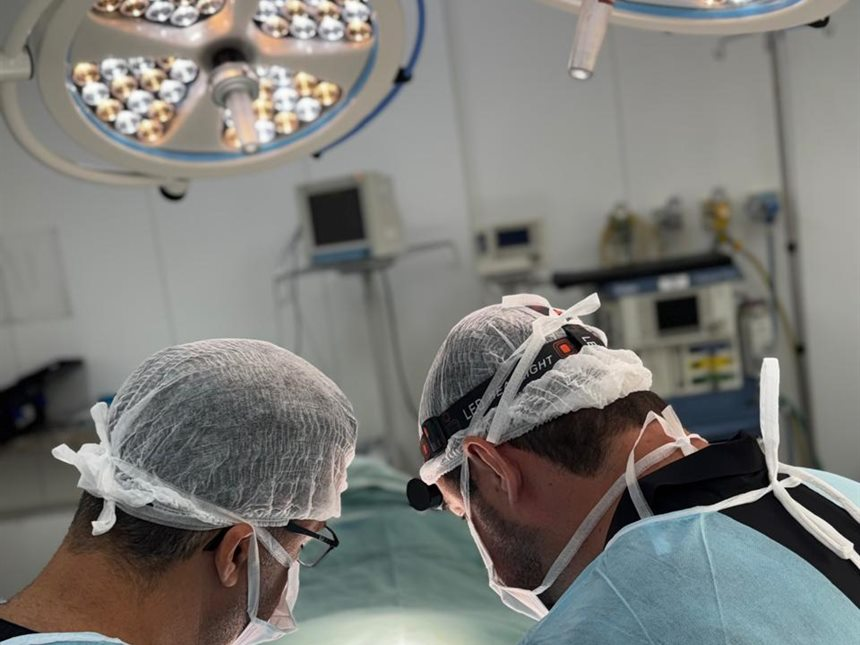
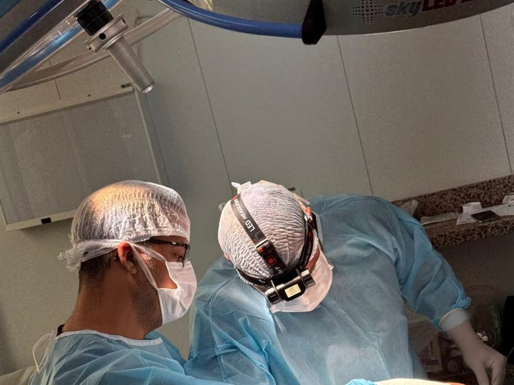

Pós-graduado em blefaroplastia · CRO-MG 34575
O olhar que você tem. Em uma versão mais leve.

Blefaroplastia com técnica precisa e natural para rejuvenescer o olhar, sem mudar quem você é.
- CRO-MG 34575Registro profissional
- Pós-graduadoEm blefaroplastia
- Especialista emHarmonização facial
- Atendimento emBelo Horizonte
- Centro cirúrgicoEstrutura hospitalar
O que costuma incomodar
Se você se reconhece aqui,
a cirurgia foi feita para isso
Você percebe primeiro na foto. Depois no espelho de manhã. Um dia a maquiagem para de disfarçar.
-
Bolsas de gordura embaixo dos olhos
-
Excesso de pele que encosta no cílio
-
Pálpebra pesada que cansa o olhar
-
Perguntam se você está cansada, e você dormiu bem
-
A sombra não fixa mais, some na dobra da pálpebra
-
Olhar triste ou envelhecido nas fotos
-
Sobrancelha levantada sem perceber para enxergar
-
Testa doendo no fim do dia de tanto forçar o olho
Reconheceu mais de um? A avaliação diz, com clareza, se a blefaroplastia é indicada para o seu caso.
Quero saber se tenho indicaçãoA cirurgia das pálpebras
O que a blefaroplastia resolve
A técnica é escolhida na avaliação, a partir da sua anatomia. Fale direto sobre a que te interessa.
-
Blefaroplastia superior
Remove o excesso de pele da pálpebra de cima, aquela que sobra e encosta no cílio. É a que mais alivia o olhar pesado e libera o campo de visão.
Falar sobre isso -
Blefaroplastia inferior
Corrige as bolsas de gordura e a flacidez da pálpebra de baixo, responsáveis pela aparência de cansaço permanente nas fotos.
Falar sobre isso -
Blefaroplastia completa
Superior e inferior planejadas juntas, quando as duas pálpebras precisam de correção, para o resultado ficar harmônico entre elas.
Falar sobre isso -
Lifting de sobrancelhas
Eleva e reposiciona a sobrancelha, suavizando a expressão e abrindo o olhar quando tratar só a pálpebra não é suficiente.
Falar sobre isso -
Combinações personalizadas
Procedimentos associados no mesmo tempo cirúrgico, quando o caso pede mais de uma correção para o resultado ficar completo.
Falar sobre isso -
Avaliação personalizada
Análise da sua anatomia para definir a técnica indicada, inclusive para dizer quando a cirurgia não é o caminho para o seu caso.
Agendar avaliação
Antes e depois
Resultados reais de pacientes
Casos operados pelo Dr. Raul Matos, divulgados com autorização dos pacientes.
-

Antes Depois -

Antes Depois -

Antes Depois -

Antes Depois
Imagens divulgadas com autorização dos pacientes, conforme a Resolução CFO-196/2019. Cada caso é único e os resultados variam conforme a anatomia, a idade e a resposta individual de cicatrização. As imagens não representam garantia de resultado.

Quem vai cuidar do seu olhar
Dr. Raul Matos Salomão
CRO-MG 34575
Pós-graduado em cirurgia das pálpebras, a blefaroplastia, e especialista em Harmonização Facial. A atuação é dedicada ao rejuvenescimento do terço superior da face.
Trabalha com foco em naturalidade, segurança e técnica. O objetivo nunca é mudar o seu olhar, é tirar dele o que está sobrando.
Atende em Belo Horizonte e realiza as cirurgias no Hospital ULC Lifecenter, com acompanhamento próximo em todas as etapas.
- CRO-MG 34575
- Pós em blefaroplastia
- Harmonização facial
- Belo Horizonte
Do primeiro contato ao seu novo olhar
Como funciona
-
01
Avaliação
Entendemos o seu caso, seus desejos e as suas expectativas, com exame da região dos olhos.
-
02
Plano personalizado
Definimos a técnica indicada para você, os exames necessários e tiramos todas as dúvidas.
-
03
Cirurgia
Procedimento realizado em centro cirúrgico, com estrutura hospitalar e sedação.
-
04
Acompanhamento
Orientação por escrito, retorno para a retirada dos pontos e suporte no pós-operatório.
-
05
Resultado natural
Um olhar mais leve e descansado, sem que ninguém consiga apontar o que mudou.
Onde a sua cirurgia é feita
Estrutura que transmite segurança
Sua cirurgia não é feita em sala de consultório. É realizada em centro cirúrgico, com estrutura hospitalar completa e sedação, no Hospital ULC Lifecenter, em Belo Horizonte.
Essa é uma escolha de segurança. É também o motivo de a blefaroplastia não ser tratada aqui como um procedimento estético qualquer.
- Estrutura hospitalar
- Cirurgia com sedação
- Acompanhamento no pós
Os compromissos
do Dr. Raul
O que você pode cobrar do começo ao fim do tratamento.
Agende sua avaliação-
Verdade acima de tudo
Diagnóstico honesto, inclusive quando a resposta é que a cirurgia não é indicada para você.
-
Segurança e estrutura
Cirurgia em centro cirúrgico, com estrutura hospitalar e sedação, do começo ao fim.
-
Resultados naturais
O planejamento respeita a sua anatomia e os seus traços. Nada de olhar padronizado.
-
Acompanhamento real
Presença e suporte em todas as etapas, do primeiro contato até a cicatrização assentar.
-

Centro cirúrgico completo, com foco cirúrgico e monitoração -

O Dr. Raul e a equipe no dia do procedimento
Dúvidas
Perguntas frequentes
A incisão da pálpebra superior é feita dentro da dobra natural, o lugar onde a própria anatomia esconde a marca. Na inferior, o acesso é planejado rente ao cílio ou por dentro da pálpebra, conforme o caso. Cicatriz existe em toda cirurgia, o que muda é onde ela fica.
Olhar artificial acontece quando se retira pele demais. O planejamento parte da sua anatomia e trabalha apenas com o excesso, sem mexer no formato do olho. A referência de sucesso é ninguém conseguir apontar o que mudou.
O inchaço e o roxo são maiores nos primeiros dias e vão cedendo ao longo das semanas seguintes. O tempo varia com a técnica usada e com a sua cicatrização, e é informado na avaliação, junto com as orientações do pós.
O olhar já muda assim que o inchaço cede, mas o resultado assenta aos poucos, conforme a cicatriz amadurece. Esse processo é acompanhado nos retornos do pós-operatório.
Durante, não. O procedimento é feito com sedação, em centro cirúrgico. No pós-operatório o mais comum é inchaço e sensação de repuxado, controlados com a medicação prescrita.
Sim, depois da liberação. O uso volta quando a cicatrização permitir, e o momento certo é informado no retorno. Até lá, óculos.
A superior trata o excesso de pele da pálpebra de cima, que pesa o olhar e pode atrapalhar o campo de visão. A inferior trata as bolsas de gordura e a flacidez embaixo do olho, que dão a aparência de cansaço.
Pessoas com excesso de pele, flacidez ou bolsas de gordura nas pálpebras e com condições de saúde compatíveis com o procedimento. A indicação é definida na avaliação, com exame da região e análise do seu histórico.
Não. A blefaroplastia retira o excesso, ela não muda os seus traços. Quem convive com você tende a notar que o olhar ficou mais leve, sem identificar o que foi feito.
Em muitos casos sim, com procedimentos associados no mesmo tempo cirúrgico. Isso é avaliado caso a caso, considerando segurança e tempo de recuperação.
Não existe idade obrigatória, existe indicação. Tem paciente com bolsa de gordura evidente aos 30 e paciente que só precisa da cirurgia aos 60. A avaliação define.
Pelo WhatsApp, no botão desta página. Você fala com a equipe do Dr. Raul e escolhe a data que melhor encaixa na sua rotina.
Ficou com uma dúvida que não está aqui? Pergunte direto, sem compromisso.
Perguntar no WhatsAppSeu olhar não precisa contar
uma história que não é a sua.
O excesso de pele da pálpebra não regride sozinho. A avaliação existe para te mostrar, com clareza, o que a sua anatomia permite, o que a cirurgia resolve e o que ela não resolve.
Agendar minha avaliaçãoResposta pelo WhatsApp (31) 99162-0940 · Hospital ULC Lifecenter, Belo Horizonte